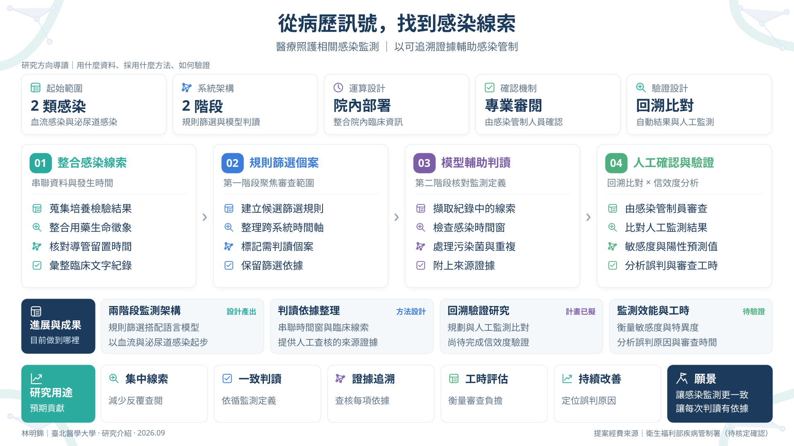

從病歷訊號，找到感染線索
研究摘要 / Abstract
判斷一位住院病人是否發生醫療照護相關感染，需要把培養結果、檢驗數值、生命徵象、用藥與導管留置時間放在一起看，還要對照臨床紀錄。這些資料分散在不同系統與時間點，感染管制人員得反覆查閱，不同人的判讀也可能有差異。
我們從血流感染與泌尿道感染開始，設計兩階段流程。第一階段以規則引擎整合院內資料，篩出需要進一步判讀的候選個案；第二階段由院內部署的語言模型擷取文字紀錄中的線索，再依監測定義檢查感染時間窗、污染菌與重複事件等條件。流程設計採院內運算，並為每個判讀保留來源證據。
系統的角色是輔助，最終仍由感染管制人員確認。驗證研究規劃以回溯性病歷比對自動結果與人工監測，評估敏感度、特異度、陽性預測值、判讀一致性與工時，並區分資料缺失、規則設定與文字擷取各自造成的誤差。期望讓監測更一致，也讓每個判讀可以被追溯。


內容依據：2026｜HAI 自動化監測機制服務建議書 v7.2；2026-08-13｜HAI 自動化監測信效度驗證研究計畫 v1